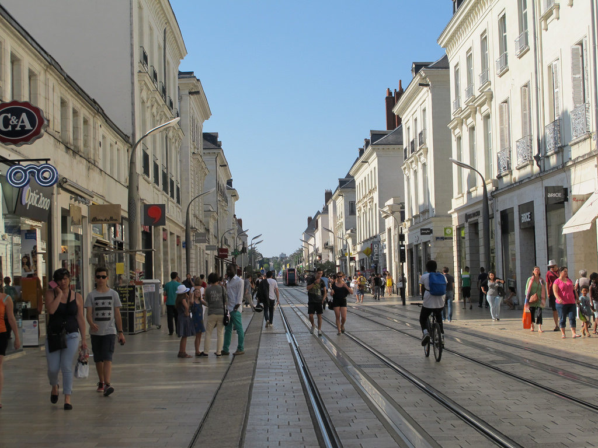

What to do in Tours?
If you are in Tours for business or for holidays, you will find all kind of activities you need: culture, nature, shopping, sport, restaurant... What do you want to do?
CultureTours is very well located on "château de la Loire" road. It is a strategic starting point if you plan to visite castles. Some of the closest are "le château de Tours", "le château de Villandry" with its wonderful garden or the Montbazon fortress presented by actors You can find here all information you need on "les châteaux de la loire", or you can go to the Tours tourist office for more details But you dont have to leave Tours to observe 15th century architecture. You can just walk into the old city streets and discover the vestiges of the past... |

|
Culture
Tours is very well located on "château de la Loire" road. It is a strategic starting point if you plan to visite castles. Some of the closest are "le château de Tours", "le château de Villandry" with its wonderful garden or the Montbazon fortress presented by actors
You can find here all information you need on "les châteaux de la loire", or you can go to the Tours tourist office for more details
But you dont have to leave Tours to observe 15th century architecture. You can just walk into the old city streets and discover the vestiges of the past...
FoodAs you can see by zooming on the map, there is a huge amount of bars and restaurants all arround the appartment What kind of food do you prefer? French "cuisine", italian, chinese, japanese, mexican.... Just chose and enjoy! If you want to cook by yourself, you can buy what you need to the supermarket "Carrefour city" on "rue des Halles", 5min walk from the appartment. For fresh food, we advise you to visit the indoor market "Les Halles" witch propose local products. An external market is also available on wednesday and saturday morning on "place des Halles" |
Food
As you can see by zooming on the map, there is a huge amount of bars and restaurants all arround the appartment
What kind of food do you prefer? French "cuisine", italian, chinese, japanese, mexican.... Just chose and enjoy!
If you want to cook by yourself, you can buy what you need to the supermarket "Carrefour city" on "rue des Halles", 5min walk from the appartment.
For fresh food, we advise you to visit the indoor market "Les Halles" witch propose local products. An external market is also available on wednesday and saturday morning on "place des Halles"
ShoppingIf you want to do some shopping, you will find all that you need in Tours city center. The principal street for shopping is "rue Nationale", 5min walk from the appartment. The tramway follow this street. You could also find many shops in all streets crossing "rue Nationale" and in the old city. |  |
Shopping
If you want to do some shopping, you will find all that you need in Tours city center.
The principal street for shopping is "rue Nationale", 5min walk from the appartment. The tramway follow this street. You could also find many shops in all streets crossing "rue Nationale" and in the old city.

|
Sport and natureWith all its beautiful natural landscape Tours is a great place to practice running, biking or other outdoor sports, or just for a walk. For example, the Loire and the Cher banks or the "Bergeonnerie" lake with its outdoor swimming pool, are wonderful places to walk or to practice sport. Find some activities here! You can also find some parks like "Prébendes" garden and Botanic garden in the city center or "Honoré de Balzac" park on a small island on the Cher |
Sport and nature
With all its beautiful natural landscape Tours is a great place to practice running, biking or other outdoor sports, or just for a walk. For example, the Loire and the Cher banks or the "Bergeonnerie" lake with its outdoor swimming pool, are wonderful places to walk or to practice sport. Find some activities here!
You can also find some parks like "Prébendes" garden and Botanic garden in the city center or "Honoré de Balzac" park on a small island on the Cher